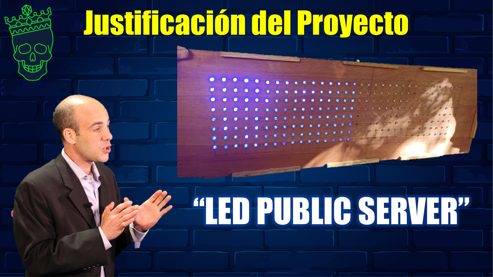

Justificación del Proyecto
Tomando ésta problemática nuestro proyecto surge de la necesidad de satisfacer a clientes potenciales pues
se conoce que como coloquialmente se dice "Todo entra por los ojos" al hacer mas atractiva las señalizaciones o
publicidades, y así se adquiere más interés y por ende se tiene mayor atención.
